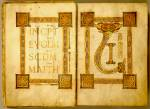

Evangeliarium. Latijn. Handschrift op perkament, 251 ff., 295 x 220 mm. Noord-Frankrijk (Sint-Vaast in Atrecht of Sint-Amand), circa 850 of wat later. -- (BPL 48)
Een evangeliarium bevat in de vroege middeleeuwen de tekst van de vier evangeliën, voorafgegaan door de Eusebische canontafels. De laatste zijn hier, zoals de gewoonte was, omlijst met architecturale zuilen en bogen. Gewoonte was ook om het begin van elk evangelie te versieren. In de vroege middeleeuwen vindt men daar vaak de portretten van de vier evangelisten. In de laat-Karolingische handschriften van de Franco-Saksische school, waartoe ook dit handschrift behoort, bleven die achterwege. In plaats daarvan werd volstaan met de symbolen van de evangelisten of een decoratie die uitsluitend gebaseerd was op de aankondiging van het evangelie en de beginwoorden van de tekst. De fantasievolle uitwerking van het woordbeeld is geïnspireerd op een oudere, insulaire traditie.
De getoonde folia 14v en 15r geven het begin van het evangelie van Mattheus. Evenals bij de andere eerste bladzijden steekt de decoratie scherp af tegen de heldere achtergrond van het perkament. Dit effect wordt versterkt door de zware omlijsting met vlechtwerk, waarbinnen de tekst, de aankondiging van Mattheus, onder toepassing van veel goud verwerkt is: ‘Incipit evangelium secundum Mattheum, Liber (generationis Ihesu Christi)’. De leesbaarheid is geheel ondergeschikt gemaakt aan de decoratieve functie.
Op de rechterbladzijde overheersen de eerste twee letters. De L loopt boven en onder uit in twee aan de fantasie ontsproten koppen van monsters, zoals men die ook in een grote verscheidenheid van vormen in de insulaire, met name de Ierse boekversiering vindt. Door haar zware vorm wordt de, de pagina bepalende, letter vooral aan de bovenzijde hecht verankerd aan de sierlijst.
Literatuur
- A.W. Byvanck, Les principaux manuscrits à peintures conservés dans les collections publiques du Royaume des Pays-Bas, Paris 1931 ( = Bulletin de la Société francaise de reproduction des manuscrits à peintures. 15), p. 67-68.
- A. Boutemy, ‘Le ms. 48 de Leyde et l’enluminure franco-saxonne’, in: Actes du XVIIe congrès international d’histoire de l’art. La Haye 1955, p. 212-220.
- Beatrijs Brenninkmeyer-de Rooy, ‘The miniatures of the Egmond Gospels’, in: Simiolus. Quarterly journal for the history of art, 6 (1973), p. 150-171.
- Vergelijk: Otto Pächt, Buchmalerei des Mittelalters. Eine Einführung. München 1984, p. 72-74.
| vorige pagina | top pagina |